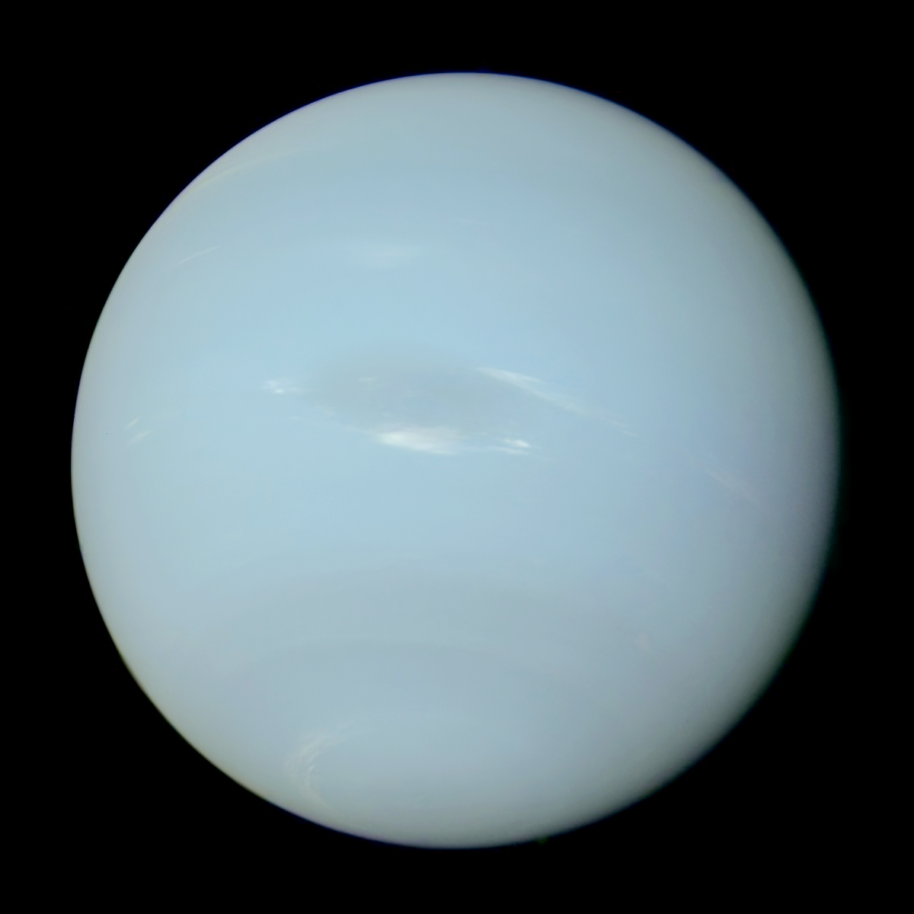

The NEPTUNE Ocean Observatory project is part of Ocean Networks Canada which is a University of Victoria initiative. NEPTUNE is the world's first regional-scale underwater ocean observatory that plugs directly into the Internet.[1] NEPTUNE is the largest installation on the Ocean Networks Canada network of ocean observatories. Since December 2009, it has allowed people to "surf" the seafloor while ocean scientists run deep-water experiments from labs and universities around the world. Along with its sister project, VENUS, NEPTUNE offers a unique approach to ocean science. Traditionally, ocean scientists have relied on infrequent ship cruises or space-based satellites to carry out their research, while the NEPTUNE project uses a remotely operated crawler.